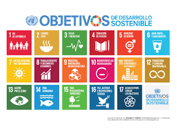
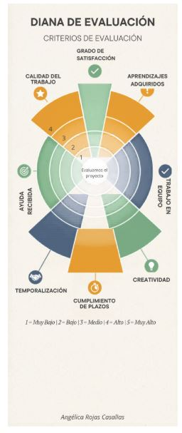
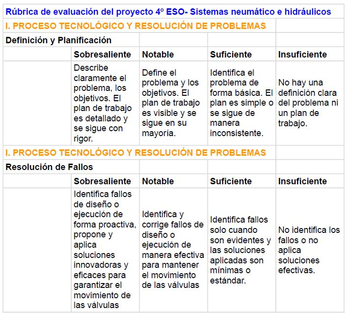
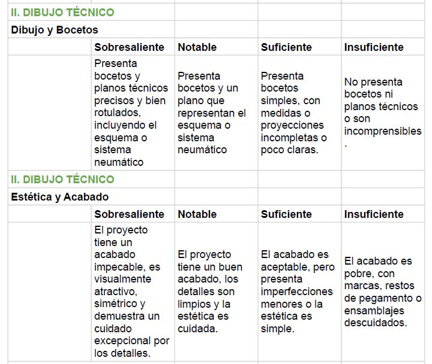
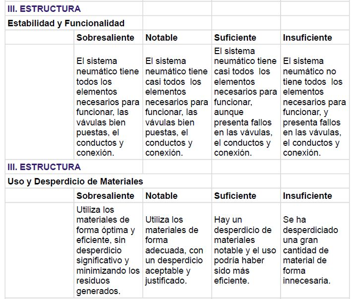
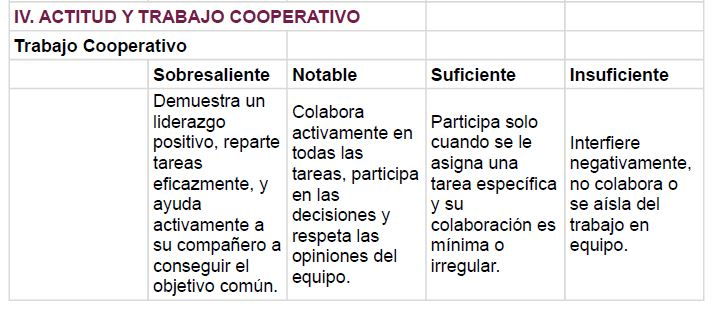

El reto de la automatización sostenible. La eficiencia energética en la industria.
- Nivel al que va dirigido: 4º ESO
- Temporalización aproximada: 10 sesiones
- Materia o materias implicadas: Tecnología, física y química, matemáticas
Aprendizaje Basado en el Descubrimiento: con el uso de actividades que permitan analizar que la tecnología deja de ser un concepto abstracto para convertirse en algo familiar para el alumnado.
Gamificación y Motivación: generar un clima de aula positivo y una competitividad sana.
El Docente como Facilitador: El papel del profesor se desplaza de la instrucción directa hacia la ayuda, utilizando preguntas aleatorias para fomentar el pensamiento crítico.
¿Qué vas a aprender mientras haces la guía?
Deberás resolver el siguiente reto:
Una fábrica local quiere reducir su huella de carbono sustituyendo motores eléctricos ineficientes por sistemas neumáticos de bajo consumo o hidráulicos de alta precisión.
- Conecta con los ODS (Objetivos de Desarrollo Sostenible) y da una utilidad real al cálculo de fuerzas y presiones.

Producto Final:
- Diseño de una línea de montaje automatizada mediante un simulador que cumpla con criterios de ahorro energético.
- Realización del proyecto en el taller en el cual van a entender cómo funciona la hidráulica y neumática que es más fácil de analizar, usando para ello un brazo hidráulico.
Metodología
- Aprendizaje entre Iguales: el aprendizaje es más efectivo cuando los propios alumnos corrigen sus fallos y se explican entre ellos los conceptos.
- Autocorrección Mediante TICs: El uso de vídeos y realización de simulaciones para verificar el funcionamiento de los circuitos permite que los alumnos logren entender mejor las ideas al identificar sus propios errores de forma autónoma.
- Evaluación Formativa: La justificación realizada por el alumno en sus fichas de trabajo sirve como enlace directo del aprendizaje y del proceso de razonamiento. Además de las simulaciones en el ordenador que se realizarán a lo largo del tema y la realización del proyecto en el taller.
Instrumentos de evaluación
Para la evaluación de esta SA se utilizarán diferentes instrumentos de evaluación como los detallados en la tabla siguiente, pero en especial para las simulaciones y el proyecto se usará la Diana de evaluación y la Rúbrica.
| TAREA |
CRITERIO DE EVALUACIÓN | AGRUPAMIENTO | TIEMPO APROXIMADO |
HERRAMIENTA |
| Actividad 1. Investigación | C.E.2.2 | Individual | 1 sesión | Ficha - Libro |
| Actividad 2. Clasificación de sistemas |
C.E.2.2 C.E.3.1 |
Parejas | 2 sesiones | Ficha- Classroom- Libro |
| Actividad 3. Análisis de circuitos |
C.E.2.2 C.E.3.1 |
Individual- Parejas | 1 sesión | Ficha- Classroom- Libro |
| Práctica 1. Simulación de circuitos neumáticos simples |
C.E.2.2 C.E.4.1 |
Individual | 1 sesión | Ordenador |
| Práctica 2. Simulación de circuitos neumáticos más complejos |
C.E.2.2 C.E.4.1 C.E.3.1 |
Individual | 2 sesiones | Ordenador |
|
Proyecto circuito neumático-hidráulico. (Presentación proyecto usando google presentaciones) |
C.E.2.2 C.E.4.1 C.E.3.1 C.E.5.1 |
Parejas | 3 sesiones | Taller/ordenador |
Diana de evaluación:

En el siguiente enlace encontrará la rúbrica de evaluación del proyecto. Rúbrica




content/resources/Sistemas neumáticos- Proyecto- Rúbrica - Helicóptero.pdf
Criterios de Evaluación
TEC.4.2.2.Fabricar productos y soluciones tecnológicas, aplicando herramientas de diseño asistido, técnicas de elaboración manual, mecánica y digital y utilizando los materiales y recursos mecánicos, eléctricos, electrónicos y digitales adecuados.
TEC.4.3.1.Intercambiar información y fomentar el trabajo en equipo de manera asertiva, empleando las herramientas digitales adecuadas junto con el vocabulario técnico, símbolos y esquemas de sistemas tecnológicos apropiados.
TEC.4.4.1.Diseñar, construir, controlar y simular sistemas automáticos programables y robots que sean capaces de realizar tareas de forma autónoma, aplicando conocimientos de mecánica, electrónica, neumática y componentes de los sistemas de control, así como otros conocimientos interdisciplinares.
TEC.4.5.1.Resolver tareas propuestas de manera eficiente mediante el uso y configuración de diferentes aplicaciones y herramientas digitales, aplicando conocimientos interdisciplinares con autonomía.